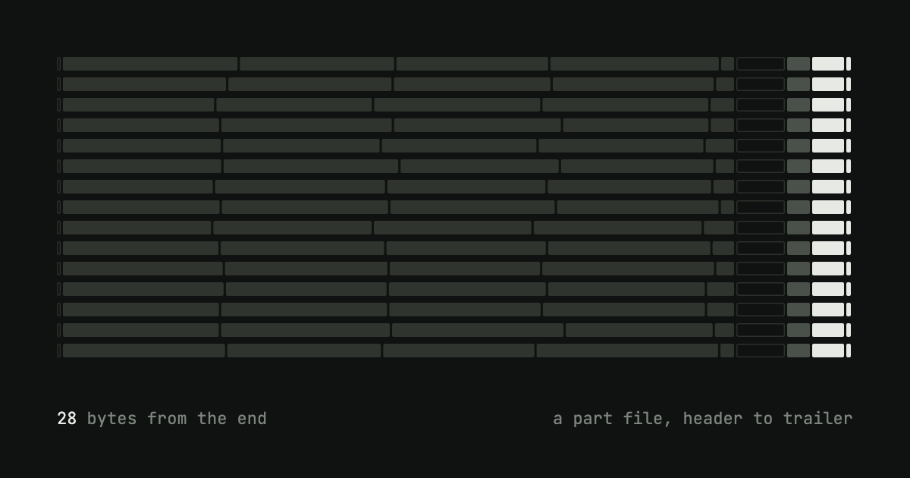

Twenty-eight bytes from the end: inside the LynxDB engine
LynxDB opens a part file from its last 28 bytes, which locate a footer that describes every block: its first sort key, its key runs, its rows per hour. This post follows the Bluesky events from JSON lines into that footer, shows which queries end there and what the design costs, and sets each piece beside ClickHouse's MergeTree.
 Evgenii Orlov
16 min read
Evgenii Orlov
16 min read